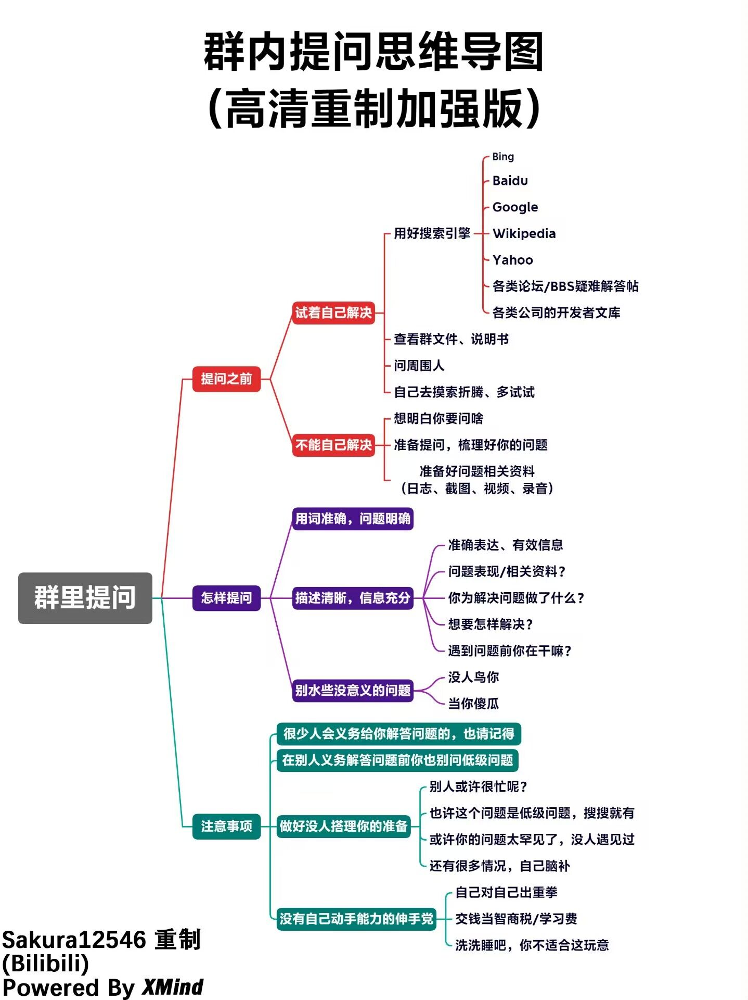

注意事项
关于整合包的一些回答：
- 新手不会导入整合包的看这个视频
使用外置启动器玩教程:点这里前往
- ①夸克网盘60b的是链接超过60b就是压缩包可以直接点开看到里面的文本，别天天搁这问，为什么导入不了了，下载打开里面是链接，不知道这链接在哪用的直接去浏览器里打开,不会的去看群相册里新人看教程里面的视频，再问就送飞机票。
- ②压缩包损坏去mt文件管理器中，把.7z格式的文件改为.log的文件格式，或者长按.7z文件，并选择“使用文本的方式”打开。
- ③我们的官网：点这里前往，所有移植整合包：点这里前往
- ④压缩包损坏去mt文件管理器中，把.7z格式的文件改为.log的文件格式，或者长按.7z文件，并选择“使用文本的方式”打开。
- ⑤若你的运行内存不够，请使用清浊的内存清理或者使用RAM Cleanup进行内存清理
- ⑥关于启动器的下载与整合包的自动导入：前往这里查看
- ⑦如果进入UC网盘出现了整合包消失先去视频底下的简介下载，如果还是过期，就要在这个专栏下面评论了，什么整合包前往这里查看
- ⑧8G手机只能玩中低配的整合12G手机可以玩，16G手机畅玩，6G手机全部淘汰
- ⑨关于提问的一些问题，以及如何提问如下图：

- ⑩关于整合包的移植，如下内容达到即可移植：想移植什么包满足这几个条件就行必须要有任务，任务有的需要汉化，冒险的，模组最好不要超过260，尽量帮你弄，弄不好也没办法，可以私聊向我发送没有移植整合包文件，我设置了不用加好友就能发送文件的权限，别加好友
- 请遵守我们的服务条款和隐私政策。
- 警告：若不按规则来，会直接送飞机票，没任何解释的余地。
如果您有任何疑问或需要帮助，请随时联系我们的客服团队。